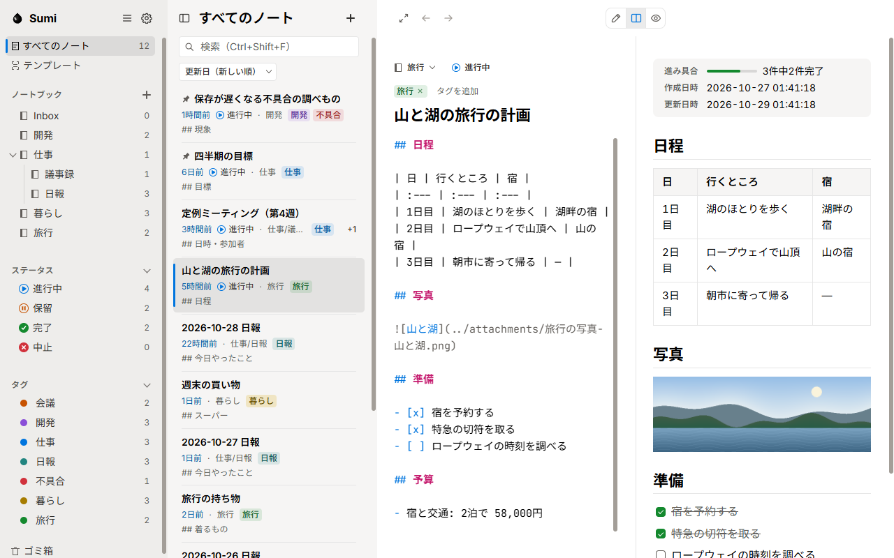
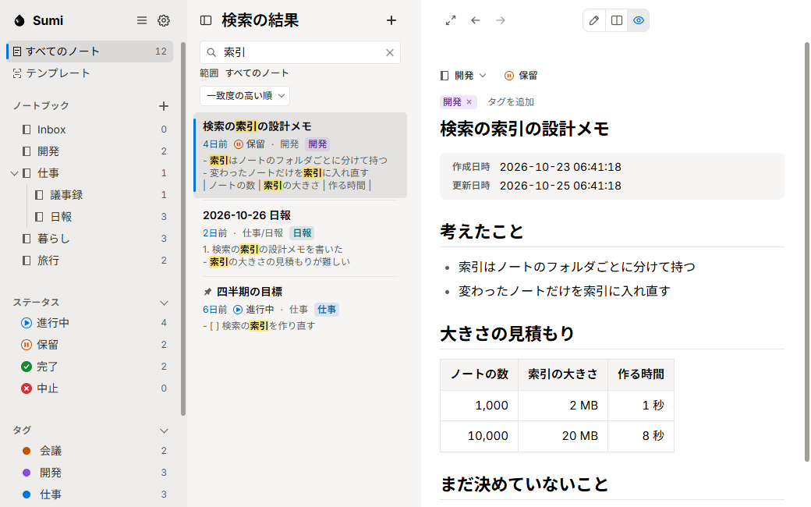
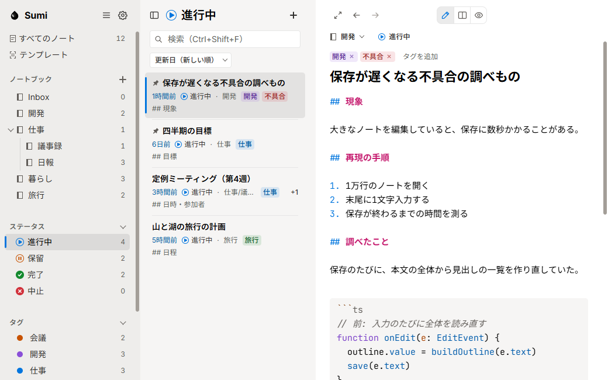
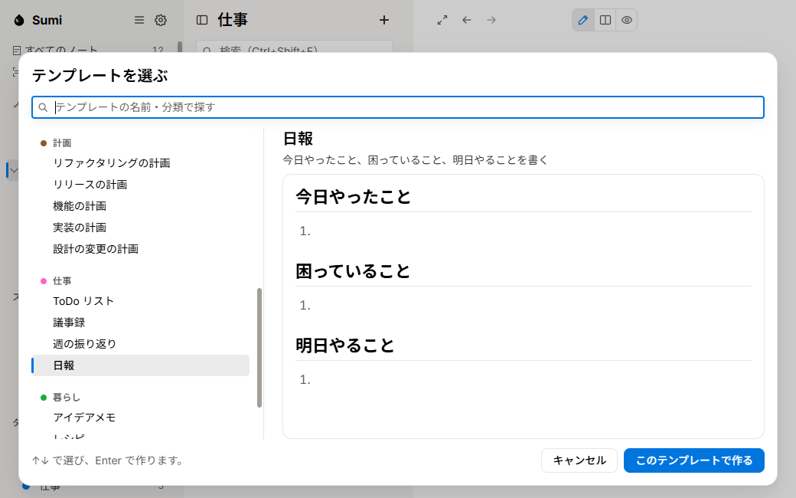
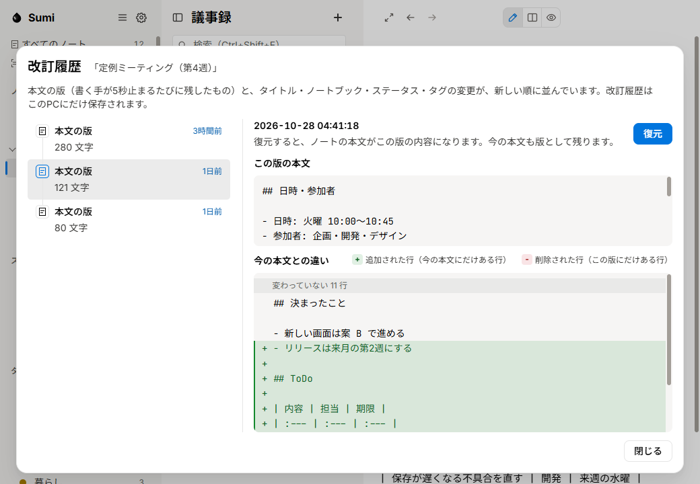

保存も、整理も、もう迷わない。
書いたメモの居場所が、いつも分かる。Sumi Notes は、書いた内容を自動で保存し、自分で選んだフォルダに Markdown 形式のファイル（.md）として残す、Windows のノートアプリです。保存の操作は不要です。ノートはノートブック・ステータス・タグで整理でき、全文検索ですぐに見つけられます。

- Windows 用
- 無料
- Markdown 形式のファイル（.md）で保存
- オフラインで動作
特徴
-
ノートは Markdown 形式のファイル（.md）
ノートは、自分で選んだフォルダに Markdown 形式のファイル（.md）として保存されます。ほかのエディタでも開くことができ、そこで加えた変更も、そのまま画面に反映されます。
Ctrl+N 新しいノート
-
日本語も1文字から検索できる
全文検索は1文字からの部分一致です。全角と半角、大文字と小文字を区別せずに検索し、見つかった箇所を一覧の中で強調して表示します。
Ctrl+Shift+F ノートを検索

-
ステータスとタグで整理できる
ノートブック（入れ子にできます）、ステータス（進行中・保留・完了・中止）、色を付けられるタグでノートを整理します。よく使うノートは、一覧の上にピン留めできます。

-
すぐに使えるテンプレートが 29 個
日報・議事録・旅行の計画・不具合の修正など、29 個のテンプレートを用意しています。自分で作成したテンプレートも使用できます。
Ctrl+T テンプレートから作成

-
ノート同士をリンクでつなげる
[[ と入力すると、ほかのノートの題名が候補として表示され、リンクを挿入できます。リンク先のノートでは、どのノートからリンクされているか（バックリンク）を確認できます。
[[ ノートへのリンクを挿入
-
改訂履歴から前の版に戻せる
入力が止まるたびに、本文の版が改訂履歴に残ります。前の版との違いを確認して、元に戻すことができます。削除したノートはゴミ箱に移り、あとから復元できます。

入手の方法
Microsoft Store で公開の準備中です。公開後は、このページのボタンから Microsoft Store のページへ移動できます。
- 入手先
- Microsoft Store
- 価格
- 無料
- 対応 OS
- Windows 10（バージョン 2004 以降）または Windows 1164 ビット版（x64）
- アカウント
- 登録不要